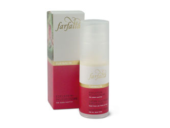

Tourmaline
The premium line in the Crystal Balance® assortment with the complete range of efficacy of the tourmaline. Essential oils used: rose, iris, bergamot, neroli etc.
NaTrue
Gemstone Tourmaline
Enlivens the senses and strengthens the life force. Brings you in harmony with yourself. Application: as massage oil or as face care and body oil.
Ingredients: Mazeration of tourmaline in organic jojoba oil*, blend of natural essential oils from controlled organic cultivation.
|
 |
Tourmaline Skincare Cream
This special moisturising cream for day and night is suitable for every skin type. Lends new energy and nurtures on many levels.
Ingredients: Fluid alcoholic mazeration of Centella Asiatica, yarrow* and camomile*; rosewater*, triglyzerides, shea butter*, grapeseed oil, wheat glycoside, ettalcohol, vegetable glycerine, Jojobaöl*, almond oil*, wild rose oil*, glyceryle stearate, phytosqualan from olives, bees wax, vitamin E, blend of natural essential oils, extract of sea algae, Xanthan.
* from controlled organic cultivation
|
 |
Tourmaline Eau Fraîche
An energy spray that awakens the spirits, lends fresh energy and strengthens the centre. Uses: as perfume, energy spray and as room harmoniser.
Ingredients: Alcohol*, rosewater*, blend of natural essential oils from controlled organic cultivation.
|
 |
top> |